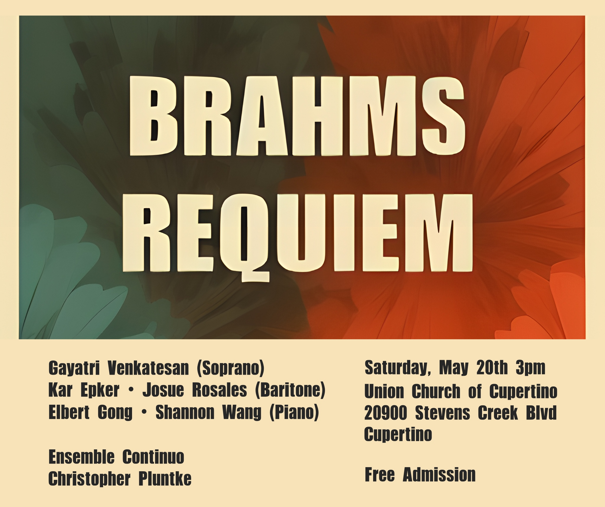

Ensemble Continuo
We're a classical choir based in Mountain View.
For our inaugural concert, we will be singing Brahms' German Requiem!
Join us!
We have a very lightweight audition process. We can almost always use more singers no matter what voice part. It helps if you can read sheet music (decent sight-reading is a plus). Even if a rehearsal cycle has started already, if you want to join us, don't worry, just come on by. Contact us with any questions.
Logistics
Our rehearsals are Tuesdays 5:30-7pm at Santiago Villa, Space Park Way, Mountain View.
Our performance is Saturday May 20 3-4pm at the Union Church of Cupertino.
Scores
Purchase this edition of the Brahms Requiem vocal score. Request access to this Google drive folder.
Past performances
Poulenc, Mendelssohn, and carols
On Dec 6 2022, we performed our first Google concert since the pandemic, featuring Poulenc's Quatre Motets pour le Temps de Noël and Mendelssohn's Weihnachten (video). We also sang at Salon (video), performed jointly with the Googler Orchestra and caroling group, and caroled at holiday parties.

Ticheli, Bennet, and Bach
Our first in-person recording since the pandemic was in a parking garage underneath the Googleplex. We sang Ticheli's Earth Song (video), John Bennet's madrigal Weep O Mine Eyes, and Bach's motet BWV 1164 Ich lasse dich nicht.
Rossini Petite Messe Solennelle and carols
In the first year of the pandemic, we met virtually to sing Christmas carols and excerpts from Rossini's mass (video).
Bach Christmas Oratorio
In Dec 2019 we performed the first three cantatas of Bach's Christmas Oratorio (video, snippet).
Vivaldi Gloria
We performed Vivaldi's Gloria in D on Aug 15, 2019 (video).
Mozart Requiem
We performed Mozart's Requiem on Apr 25, 2019 (video).
Handel Messiah
We performed selections from Handel's Messiah in Dec 2018 (video).